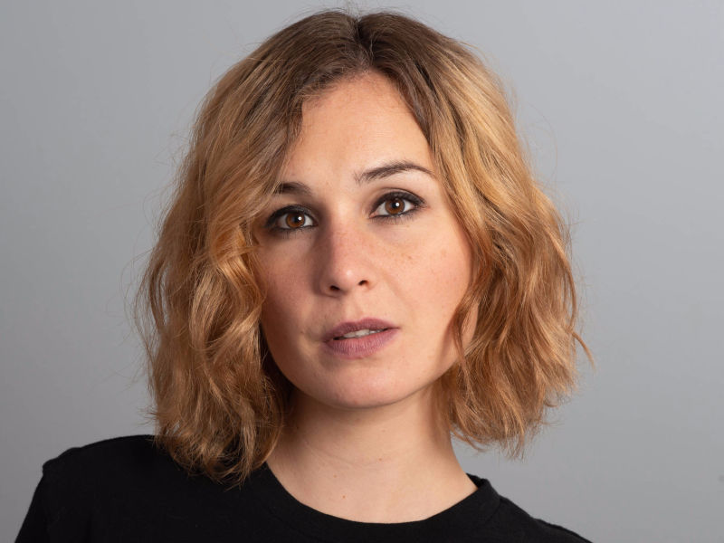
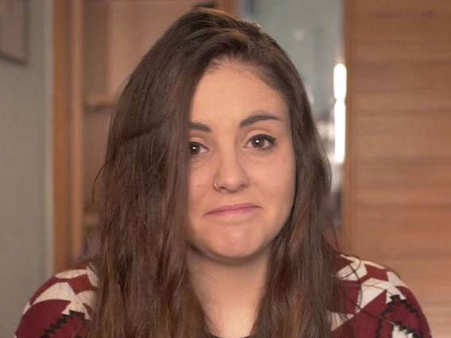
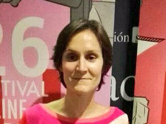

Nadia de Santiago: actriz
 Nuria Varela: periodista, escritora y activista
Nuria Varela: periodista, escritora y activista Pamela Palenciano: activista y monologuista
Pamela Palenciano: activista y monologuista Laura Freixas: escritora y activista
Laura Freixas: escritora y activistaAndrea Compton: youtuber y viner
 Nerea Rodríguez: cantante y actriz
Nerea Rodríguez: cantante y actrizTania Martín: bailarina y directora
Carlota Coronado: directora y productora de cine